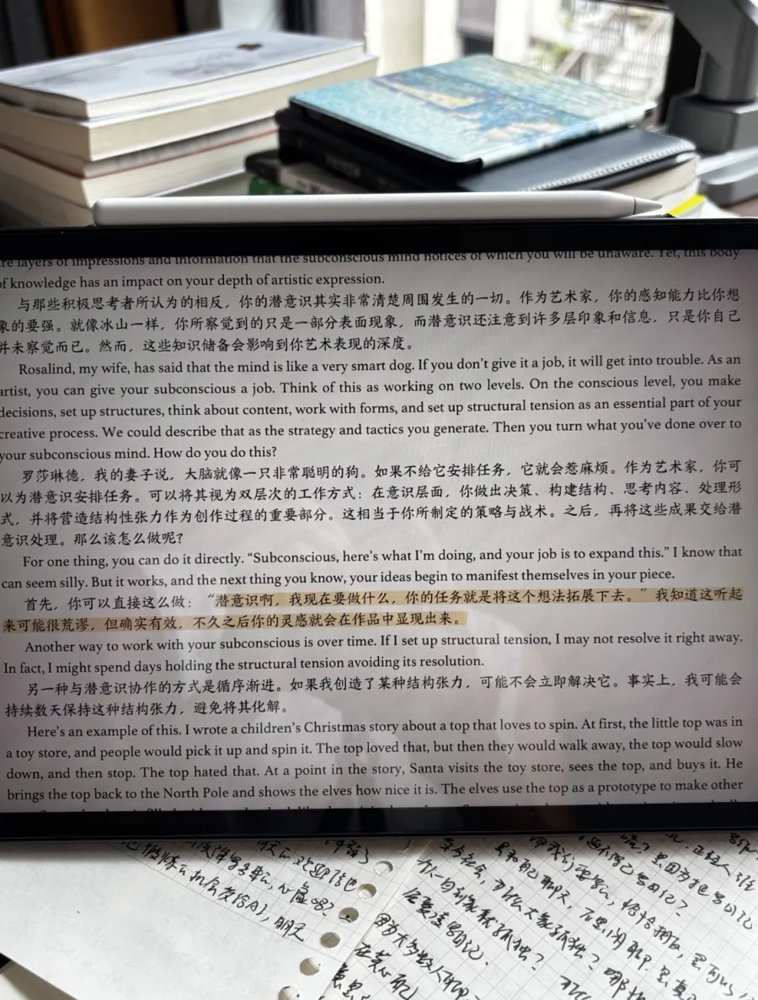

01随手翻书获取灵感的设计
我会把大部分书都堆在身边，这样看到某一本就能随手拿起来翻。
在我写作写到没有灵感、累了、不知道该写什么，或者休息的时候，随手翻一本书，往往很容易发生一种情况：我想要的内容正好出现在面前，然后就串联起来了。
比如《最小阻力之路》里提到「潜意识知晓一切」，就是我昨天听书时随便听某一个章节突然听到的。

这和我们口喷群里昨天大家分享的感受也串联起来了。
这就是创作过程中的潜意识：一开始我们并不知道自己会说什么，但是我们的潜意识知晓一切，引领着我们口喷，写出、表达出我们意想不到的东西。
此外，我也会在厕所和客厅都放一些书，让我随手就能抓取得到。
今天随手在客厅喝酸奶，翻阅一本《爱因斯坦传》，正好看到爱因斯坦在讲述他推导出狭义与广义相对论时，和作家的创作过程如出一辙。
我们平时不翻书，是因为我们身边常常没有选择，手边只有一部手机。
所以，阻力最小的选择一定是拿起手机随意翻阅，哪怕你不知道自己想做什么、想看什么。哪怕你觉得手机并没有那么好玩。
但这就是「最小阻力之路」——能量一定会往阻力最小的地方流动，这和你的毅力没有任何关系。
02喝水记录的设计
为了每天能喝够两升水，我用的是 500 毫升的水杯，每天需要记录自己是否装了 4 次水。
但每次我都会忘记记录，导致忘了自己喝到第几杯。
现在我的设计是：把彩色黑板笔放在我经过的路边。当我经过时，大脑的链接是「看见笔就要记录」；再往黑板上一看，上面写着绿色的「喝水」，非常显眼。
这样每次我拿着水杯经过，就会顺手记上一笔。
03休息与运动的设计
我身边会放一些休息用的东西。比如一根爱尔兰哨笛，看见了就会随手拿起来练习（最近在练《海绵宝宝》主题曲）；还有一个球拍，休息时可以用来练球运动。
但之前并没有休息这条路径，哪怕效率很低了，依旧在电脑前磨洋工。
最近我新买了一个番茄钟计时器，用来提醒自己每 25 分钟就要站起来活动一下。于是拿起球拍的次数就变多了。
物理番茄钟「及时的提醒」这件事情可以给我带来的好处，可以用一整篇来详细说。
我也尝试过用手机计时，但每次拿起手机，都会顺手去刷手机，从而停不下来——手机反而成了引导我去刷的「最小阻力之路」。
这是一个非常有意思的渐进过程。
你不是从一开始就知道要这样设计的，而是在你留意并理解了「最小阻力」的原理和内在结构后，刻意去观察自己遇到的阻力，想要去解决问题，从而慢慢设计出来的。
大家也可以先建立起这样的意识，在生活中，把那些总是困扰你的一些小痛点，慢慢设计成属于你自己的「最小阻力之路」。
一切设计的原则都是如此：不依赖于自己的意志力，不要求自己，要顺应人性。
顺着懒惰去设计适合你的生活、工作场景。
懒惰是创造力的源泉。
今日开喷指引卡
打开录音，可以试着说：
1、你身边已经有的一处「最小阻力设计」
想一想自己有没有、哪怕很小的一处这样的设计——一本随手能翻到的书、一支放对了位置的笔、一个顺手就能拿起来的东西。它解决的是什么问题？你是怎么想到这么放的？
2、你有一个一直没解决的小痛点
某件事你总是「忘记」、总是「懒得做」、总是「半途而废」——先别急着怪自己意志力不够。说说这个痛点具体是什么，此刻你手边、周围都有什么，阻力最小的那条路通向的是哪里。
现状是：还没有喷。
开录之后，不用暂停，说够15分钟，沉默、语气词也算。
说完可以来群里分享：「Day 3 ✅ + 你的一处最小阻力设计，或者未来想如何设计某一处？」。
—— 云不见 · 2026.07.09